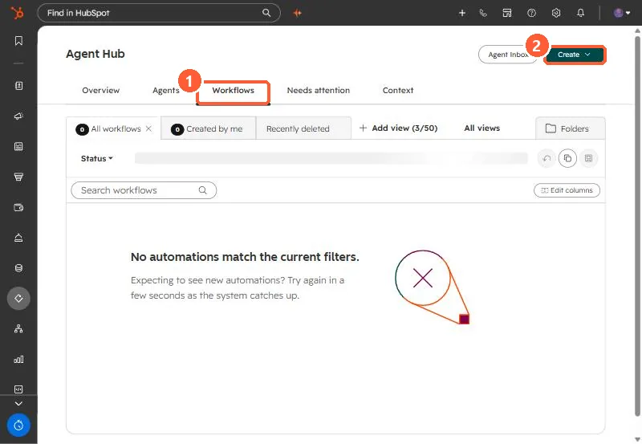

Short answer
Agent Hub's Workflows tab builds workflows that can include agents as steps: Run custom agent or Add agentic step with your own prompt, next to normal actions like Create record and Edit record. HubSpot's KB says AI and agentic actions require HubSpot Credits. The Run agent action in classic workflows is limited to 500 executions a day. Agentic workflows need Professional or Enterprise.
1. The Workflows tab
My demo portal has no Agent Hub workflows yet. Its classic workflows are still in Automation, Workflows.


2. What changes
- Agent steps: run an installed custom agent, or write an agentic step prompt with inputs.
- Code: custom code actions are available, and Breeze Assistant can draft the code.
- Cost: AI and agent actions use credits. Set limits first, as in HubSpot Credits usage and limits.
3. When to keep a classic workflow
If every step is a fixed rule (set a property, create a task, send an email), a classic workflow does it without credits. Use agent steps where judgment or research is the point. Classic basics: enrollment triggers.